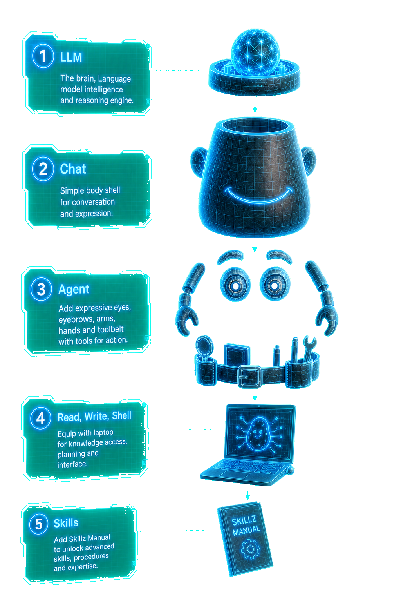
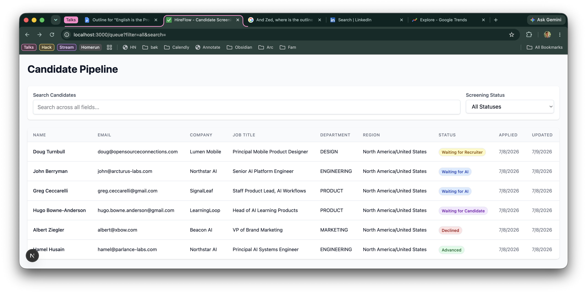
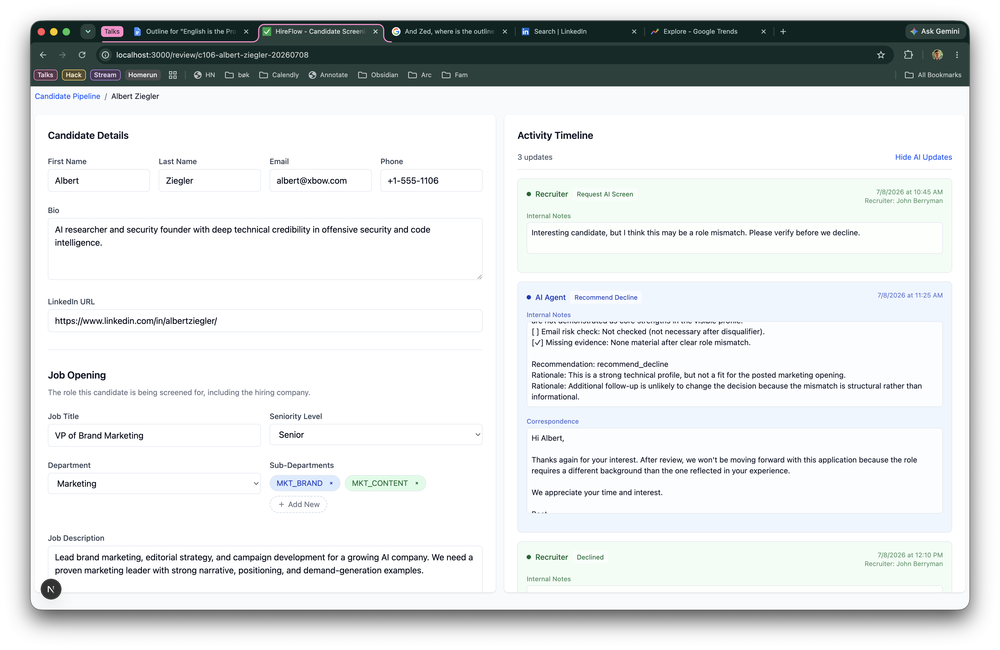

O’Reilly · Zero to Agent · July 15Opening frame№1 / 24
Opening thesis
English is the
language
of AI software.
O’Reilly
Zero to Agent
John Berryman
Arcturus Labs
AI product consulting · applied agent systems
Talk thesis first. Everything else follows from it.
What you’ll learnIntro№2 / 24
What you’ll learn
01
What an agent really is. (It’s actually pretty simple.)
02
Why English is now the language for AI software.
03
How to incrementally build AI products that actually work.
What · Why · How
2023 anatomyOverview№3 / 24
defining an agent
In 2023, an AI agent was just an LLM wrapped in loops.
- On the inside was an LLM: text in -> text out.
- Add an outer user loop and now it’s a chat bot. It listens and speaks.
- Add an inner tools loop and now it’s an agent. It can see and interact with the world.
resp = llm("ol' macdonald had a ")
print(resp)
>>> farm, E-I-E-I-O
2023 anatomyOverview№4 / 24
defining an agent
In 2023, an AI agent was just an LLM wrapped in loops.
- On the inside was an LLM: text in -> text out.
- Add an outer user loop and now it’s a chat bot. It listens and speaks.
- Add an inner tools loop and now it’s an agent. It can see and interact with the world.
messages = []
while True:
messages.append(input("user>"))
resp = llm(messages)
print(resp)
messages.append(resp)
2023 anatomyOverview№5 / 24
defining an agent
In 2023, an AI agent was just an LLM wrapped in loops.
- On the inside was an LLM: text in -> text out.
- Add an outer user loop and now it’s a chat bot. It listens and speaks.
- Add an inner tools loop and now it’s an agent. It can see and interact with the world.
messages = []
while True:
messages.append(input("user>"))
while True:
resp = llm(messages)
print(resp)
messages.append(resp)
if resp.has_tool_usage():
messages.append(
execute(resp.tool_name, resp.tool_args)
)
else:
break
ProblemTechnical framing№6 / 24
BUT 2023 AGENTS ACTUALLY SUCKED
They were terrible at following instructions.
Here was the problem
- they would start on the right track
- then get distracted by their own tool output
- or get distracted by examples in the context
- and soon start solving some other problem
What we did instead
- constrain the workflow with explicit state machines
- force the processing steps to happen in a fixed order
- use things like LangGraph to keep the model on rails
Technical problem: not enough long-horizon reliability
Harness eraOverview№7 / 24
... but nevertheless
Agents lived on in coding harnesses, and improved significantly.
- We gave them read, write, edit, and shell tools. They could write their own scripts. This made them general agents.
- When you get good at reading from the file system, agent skills become an obvious way to capture repeated instructions. Skills are basically an onboarding manual for your agent “intern”.
- Then in late 2025 coding agents suddenly became much better at long-horizon work.
We only rarely need bespoke state-machine workflows. Just give the agent the right tools and the right agent skills.
Harness eraOverview№8 / 24
... but nevertheless
Agents lived on in coding harnesses, and improved significantly.
- We gave them read, write, edit, and shell tools. They could write their own scripts. This made them general agents.
- When you get good at reading from the file system, agent skills become an obvious way to capture repeated instructions. Skills are basically an onboarding manual for your agent “intern”.
- Then in late 2025 coding agents suddenly became much better at long-horizon work.
We only rarely need bespoke state-machine workflows. Just give the agent the right tools and the right agent skills.
Harness eraOverview№9 / 24
... but nevertheless
Agents lived on in coding harnesses, and improved significantly.
- We gave them read, write, edit, and shell tools. They could write their own scripts. This made them general agents.
- When you get good at reading from the file system, agent skills become an obvious way to capture repeated instructions. Skills are basically an onboarding manual for your agent “intern”.
- Then in late 2025 coding agents suddenly became much better at long-horizon work.
We only rarely need bespoke state-machine workflows. Just give the agent the right tools and the right agent skills.
Harness eraOverview№10 / 24
... but nevertheless
Agents lived on in coding harnesses, and improved significantly.
- We gave them read, write, edit, and shell tools. They could write their own scripts. This made them general agents.
- When you get good at reading from the file system, agent skills become an obvious way to capture repeated instructions. Skills are basically an onboarding manual for your agent “intern”.
- Then in late 2025 coding agents suddenly became much better at long-horizon work.
We only rarely need bespoke state-machine workflows. Just give the agent the right tools and the right agent skills.
Harness eraOverview№11 / 24
... but nevertheless
Agents lived on in coding harnesses, and improved significantly.
- We gave them read, write, edit, and shell tools. They could write their own scripts. This made them general agents.
- When you get good at reading from the file system, agent skills become an obvious way to capture repeated instructions. Skills are basically an onboarding manual for your agent “intern”.
- Then in late 2025 coding agents suddenly became much better at long-horizon work.
We only rarely need bespoke state-machine workflows. Just give the agent the right tools and the right agent skills.
We only rarely need bespoke state-machine workflows. Just give the agent the right tools and the right agent skills.
AnatomyRecap№12 / 24

Agent anatomy review
Agents = LLM, an inner tool loop, and an outer user loop.
The real differences: we gave it the right tools, we taught it to read agent skills, and we improved the models.
a Personal storyRecognition№13 / 24
John's dawn of recognition
In an afternoon of hacking I suddenly realized: English is now the language of AI software.
Just for fun, we were building a Zoom assistant. Shawn took the wheel when we started programming it, not in Python or Typescript, but in English as an agent skill. The core of the assistant could be run on Claude Code. The only thing left was a thin wrapper to connect it to the Zoom API.
Then it clicked for me: agents were the runtime, skills were the software, and English was the programming language.
Shawn Simister
Nick
Me
Agents were the runtime. Skills were the software.
DemoApp intro№14 / 24
So we’ve come to the demo
Let’s build a job application review app.
Research is hard.


Applications flow in. Reviewers work them down.
ApproachOverview№15 / 24
Here’s our approach
How to build the job application review app
- Build the user interface
ApproachOverview№16 / 24
Here’s our approach
How to build the job application review app
- Build the user interface
- Connect it to a mock agent
ApproachOverview№17 / 24
Here’s our approach
How to build the job application review app
- Build the user interface
- Connect it to a mock agent
- Connect it to a real agent – but not a smart one
ApproachOverview№18 / 24
Here’s our approach
How to build the job application review app
- Build the user interface
- Connect it to a mock agent
- Connect it to a real agent – but not a smart one
- Finally, make the agent smarter
DemoTest drive№19 / 24
Let’s take it for a test drive
Let’s take a code tour of the
AI application reviewer.
The next two slides are intentionally dense and link out to the code
WalkthroughDense slide 1/2№20 / 24
Iterative implementation
- Start w/ simple review function — a good first mock implementation for review would be to sleep briefly and then return a canned follow-up recommendation.
- Then add an agent w/ basic skills.
- The goal here is just to show how a Pydantic AI agent is put together.
- Note, we used PydanticAI build and agent skill.
- Whenever the request to review an application comes through, we create a prompt and hand it off to our agent.
- So now it’s already a little bit smarter: instead of a canned answer, it can read the application context and do the workflow. But the workflow is still basic.
- Once the agent responds, it returns structured data that we use to call service.add_update(...).
- The agent implementation itself starts here in __init__.
- All we do is specify the model, the output type, the capabilities, and a basic instruction.
- One thing that’s really interesting is how modular everything is — it all pops in like Lego blocks.
- We point it at a bunch of skills with SkillsCapability(...).
- We give it the ability to think with Thinking(...).
- We give it web search with WebSearch().
- You can also easily add tools to these models now. We add get_linkedin_profile because you can’t use web search and web fetch to directly get at LinkedIn, so we had to trick it out.
WalkthroughDense slide 2/2№21 / 24
Make your agent smarter
- The skill file is where you actually make the agent smart. These days it’s often enough to implement the workflow in English.
- The Screening flow lays out an ordered set of steps. For workflows, defined steps make the agent easier to steer and much easier to debug when something goes wrong.
- Be crisp about output. The Your output section defines it in English, and AIReviewOutput defines that exact shape in code. PydanticAI enforces this structure as well, so it’s a great way to make sure the model returns the required structure.
- Also note this line in the skill, where I require internal_notes to conform to its own checklist structure. See internal-notes-checklist.md.
Wrap-upsmart agent№22 / 24
Wrap-up
Let’s review what we’ve learned.
- agents really aren’t that complicated
- agent skills are programs, and English is their programming language
- much of AI software is built by giving an agent the right tools and skills and connecting it to an appropriate UI
This Codebase
Arcturus Labs AI consulting
I build AI products live
O’Reilly Superstream July 23
Future workStaircase 2/3№23 / 24
This is just the start
There is much yet to learn.
- gathering and generating training data
- evaluating the software (and this is changing!)
- establishing a “virtuous cycle” of improvement
This Codebase
Arcturus Labs AI consulting
I build AI products live
O’Reilly Superstream July 23
Closing visionStaircase 3/3№24 / 24
You’ll see there’s even more
Assistants will become the dominant user experience.
You will use made-for-you applications. The internet will be for agents to access data and APIs. You will regularly co-work with your agent.
This Codebase
Arcturus Labs AI consulting
I build AI products live
O’Reilly Superstream July 23